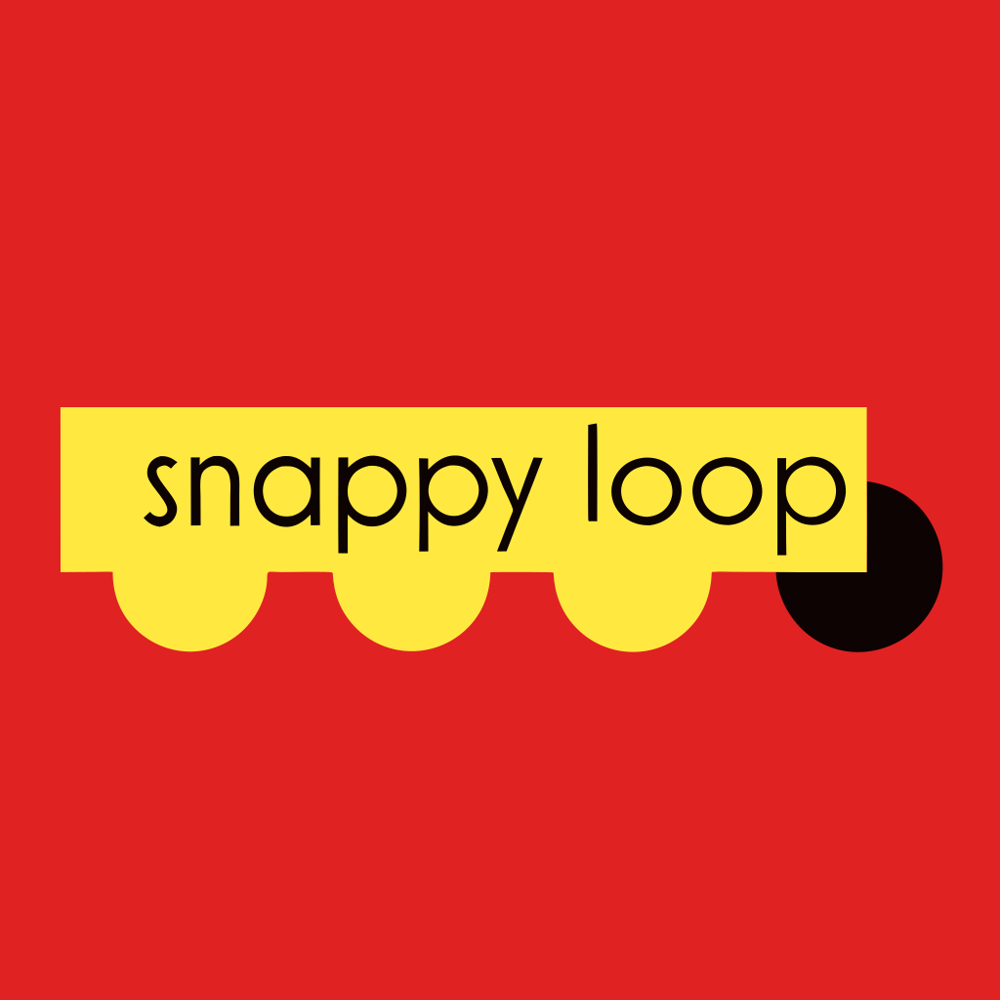

Experience
vialytics — Munich, Bavaria, Germany · Remote
- Develop function-critical parts of the grading system and the supporting web application.
- Responsible for integration of the system with Data Science team products.

snappyloop.work — Munich, Bavaria, Germany
Stack: Golang, PostgreSQL, Docker, Kubernetes
- Established the infrastructure for an AI-driven language-learning app, contributing to its rapid user growth.
- Designed and implemented technical solutions using Golang, PostgreSQL, Docker, and Kubernetes.
- Supporting infrastructure and security for a multi-agent microservice system, designed and tested under load of 20k RPS.
- Conducted product-feature research to align development with user expectations.
- Managed the app's performance so it effectively serves hundreds of active users daily.
CHECK24 Vergleichsportal GmbH — Munich, Bavaria, Germany
Stack: PHP/Symfony, MySQL, Redis, Kubernetes, Helm, Bitbucket Pipelines
- Led a backend team modernizing a legacy application: Laminas to Doctrine in 6 months, bare metal to Kubernetes, and an internal "Best Client-Oriented Product" award.
- Architected a complete DevOps transformation to establish an SRE culture, migrating infrastructure from Ansible on bare metal to Kubernetes with Helm and Bitbucket Pipelines.
- Delivered reliability milestones in the first months: one-click Kubernetes test environments, a full observability stack (Prometheus, Grafana, Sentry), and static analysis plus unit/functional tests in CI/CD.
CHECK24 Vergleichsportal GmbH — Munich, Bavaria, Germany
- Led a 4-person backend team (PHP, Symfony), collaborating with Product Managers to define requirements, prioritize the backlog, and keep architecture aligned with company strategy.
- Overhauled an inefficient workflow by spearheading the team's adoption of Scrum.
- Facilitated agile ceremonies (stand-ups, sprint planning, retrospectives) to drive team efficiency and continuous improvement.
CHECK24 Vergleichsportal GmbH — Munich, Germany
Team: 4 backend, 2 PMs.
Stack: PHP 8.2, Symfony 4/5, MySQL, Redis.
- Promoted from Backend Engineer to Team Lead, assuming full ownership of the company's critical delivery-tracking service.
- Improved stability of the legacy system by systematically resolving long-standing bugs.
- Contributed to a new strategic project in close collaboration with product managers.
- Championed software quality through code reviews, improved testing, and modern PHP/Symfony practices.
Infourok
Team: 12 backend, 5 frontend, 2 PMs, 2 designers.
Stack: PHP 8, Symfony 4, MySQL, Elastic Search.
- Established the work of two new development teams; managed two product teams.
- Built 3 teams mixed of frontend and backend developers.
- Established the full workflow and automation for all teams; participated in tech-architecture decisions.
Team: 15 backend, 12 frontend, 5 QA, 4 DevOps, 4 PMs.
Stack: PHP 7/8, Symfony 4/5, PostgreSQL, Docker, Kubernetes, AWS.
- Upscaled the engineering department from 5 to ~40 people; implemented product trios and merged design, product, and development into agile cross-functional teams.
- Established a transparent development process that gave teams autonomy without losing high-level control of progress; implemented Scrum company-wide.
- Collaborated with the CTPO on the product-development process; hired, developed teams, and scaled workflows.
- Automated the developers' workflow (JIRA + GitHub + Drone CI + Helm); developed the tech platform on Docker, Kubernetes, Helm, and Drone CI.
- Implemented a microservice architecture using PHP and Golang (AMQP and HTTP API); designed remote work, motivation, and KPI systems (including during COVID-19).
Homeapp
Stack: PHP 7/8, Symfony 4/5, PostgreSQL.
- Led a team of frontend and backend engineers; developed services using PHP 7, Symfony 4, PostgreSQL, and RabbitMQ.
- Implemented Docker for deployment and containerization; continuous delivery with Google Kubernetes; continuous integration using Google Build, Docker, and Codeception.
Balance Platform
Cloud SaaS banking product (PHP, PostgreSQL, Symfony): car-loan and mortgage applications — document verification, call center, data enrichment from scans, and verification in external systems.
Stack: Symfony 3/4, PostgreSQL, PHP 7.1, RabbitMQ, Memcached, OpenStack SWIFT, Keycloak.
- Participated in the implementation of the Scrum workflow using Git, Bitbucket, Ansible.
- Developed and maintained Docker images for local development and for running backend tests (≈10× faster than local, 2–3× faster than prior CI).

Digital Society Laboratory
- Designed project architecture; managed a team of 3 developers on a high-pace project; Symfony expertise.
- Developed the event-band asynchronous event-handling library.
Bumble Inc. — London Area, United Kingdom
- Led an international team of developers and release engineers based in London.
- Managed workflows across different time zones and cultures.
- Improved release efficiency and reliability by developing custom automation tools and optimizing the delivery process.
- Managed the end-to-end release cycle, ensuring on-time delivery of high-quality software.
- Collaborated extensively with the product team to align all releases with user requirements and company strategy.
Creara Media
- Managed the PHP department (5 teams, 15 developers).
- Implemented CI/CD system (Git/Jira/TeamCity/php-tools).
- Technical expertise; choosing common components and technologies.
Creara Media
- Developed a new SMS billing system; contributed to company-wide components.
- Took part in designing the CI/CD workflow (Jira/Git/TeamCity).
- Worked on employee development plans.
MOST Creative Club
- Participated in web-department development.
Sbubnom web-studio — Moscow, Russia
- Managed developer teams (3 teams, 12 developers). Developed about 20 promo-projects.
Pernod Ricard
- Developed IT systems for an interactive promo project.
Samsonite
- Developed IT systems for an interactive promo project.
Renault
- Developed IT systems for an interactive promo project: hardware in dealership centers and a website for managing user-generated content during the promo period for a new Renault model.